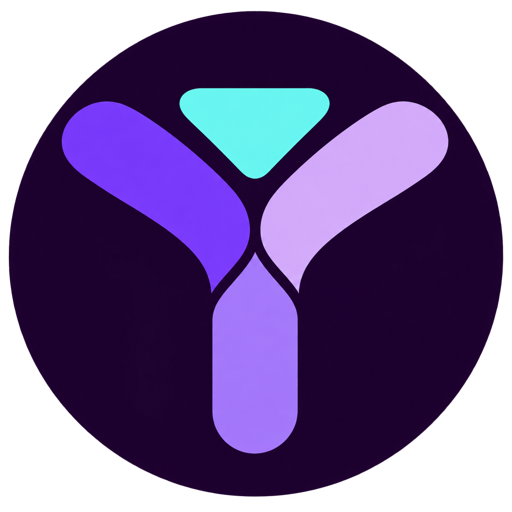
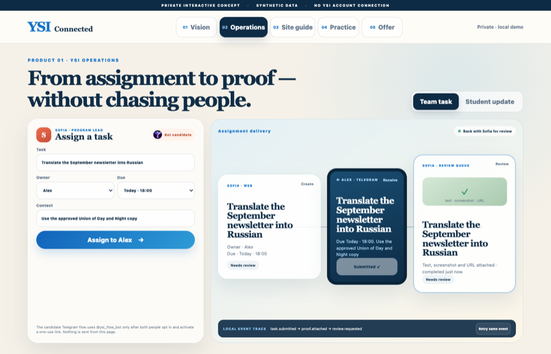
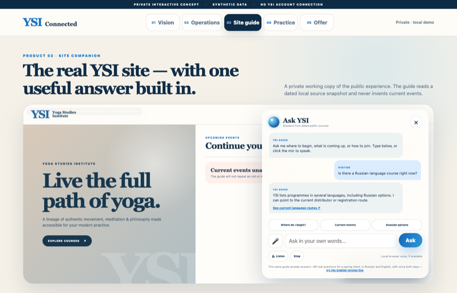
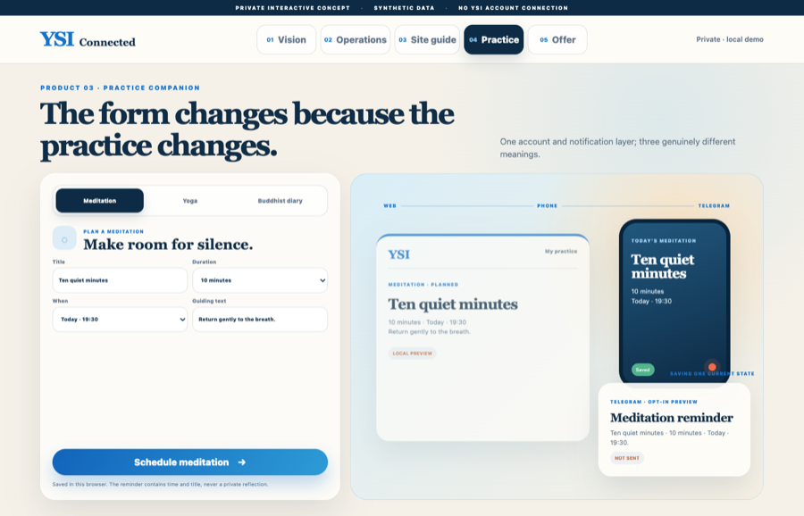

One task.
One owner.
Assign → deliver → complete → review.
3-role pilotInternal work, visitor questions and personal practice share one calm delivery layer — while every role keeps the right boundary.
Working hereSite guide, journal state and UI flows
In acceptanceThree-role @ysi_flow_bot contract
Not connectedYSI, Kajabi, payment or production sync
Assign → deliver → complete → review.
3-role pilotOne approved answer and a useful next step.
Source linkedMeditation · yoga · Buddhist diary.
Private by default
Bot candidateThe candidate Telegram flow uses @ysi_flow_bot only after both people opt in and activate a one-use link. Nothing is sent from this page.
A prospective buyer is not an existing student yet. Access opens only after Sofia confirms payment here — never automatically.
Ready for Sofia
Owner · Sergey
Due · Today, 18:00
The task will appear here with its owner and due time.
Completed work returns with evidence.
WaitingNo event created yet.
A private working copy of the public experience. The guide reads a dated local source snapshot and never invents current events.
A lineage of authentic movement, meditation & philosophy made accessible for your modern practice.
Explore courses ↗Loading dated source…
Ask me where to begin, what is coming up, or how to join. Type below, or click the mic to speak.
This same guide already answers ~60 real questions for a paying client, in Russian and English, with voice both ways — try the English version live.
One account and notification layer; three genuinely different meanings.
10 minutes
19:30
Ten quiet minutes begins at 19:30.
NOT SENTThis private demo turns the proposal into something YSI can touch. Production scope follows one short workflow review.
One staff assignment and one student update, complete from creation to confirmation. Fits how Sofia already works — she coordinates staff and distributors in different countries, not one small team.

Natural-language questions, approved sources, text and voice where appropriate.

Try the real English guide live →paid, delivered work — not this demoDifferent forms for meditation, yoga and Buddhist reflection, one delivery layer.

These are real screenshots of this demo, not mockups — try it yourself on the tabs above, then come back.
Priced against typical US/international market rates for this scope of work — happy to discuss individual terms.
One existing course or event page, in English. I map your current page, get your team's approval on 20–30 real learner questions ("where do I start?", "how do I join?", "who can help?"), and build safe handoffs for anything the guide shouldn't answer. Teacher-approved sources only — nothing invented. No diary, payment rebuild, migration, or student-data export in this option.
Everything in Course Guide, plus a real mobile-first meditation/yoga/journal concept built around YSI's own Map of Meditation stages, an approved voice-guide direction, and the technical decision for safe account and cross-device sync (who can see what, on which device). This is where a demo becomes something a real student uses daily.
A production guide across selected YSI journeys in multiple languages, a secure multi-device practice companion, teacher/admin workflows for people like Sofia who coordinate many staff and distributors at once, aggregate analytics, and a controlled Telegram reminder bridge. Exact scope follows the pilot because identity, hosting, source approval, and privacy requirements affect the final architecture.
Separate, standalone option: four original English meditation voice directions, a text-and-duration composer, downloadable guided-practice audio. No voice cloning, no teacher/student impersonation, human listening review before delivery. This is deliberately priced higher per week than it looks: a meditation voice has to sound warm, not like a website FAQ bot — that's a harder bar, and it needs real render time on dedicated hardware, not just a quick script.
Options 2–4 aren't guesses. Each one leans on a problem I've already solved end to end, for real, paying clients — not a plan, a working thing:
The risk in a project like this is usually "will the AI actually work correctly and safely." That part is already answered — what's left is fitting it to YSI's real content and scale, which is exactly what the pilot buys.
Already built and paid for, so you can judge the work itself: an English case study of the same booking + AI-guide engine, delivered for a psychology center — live, not a mockup.